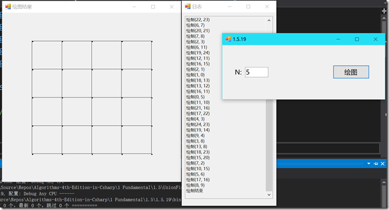

© 2019 《算法（第四版）》C# 题解 | Provided By 沈星繁
搜索解答
目前已完成到 3.1
1.5.19
上次更新：2019-04-17
发现了题解错误/代码缺陷/排版问题？请点这里：如何：提交反馈 。
解答
最后绘出的图像：

代码
给出绘图部分的代码，窗体部分见 GitHub。
using System;
using System.Drawing;
using System.Collections.Generic;
using System.Windows.Forms;
using UnionFind;
namespace _1._5._19
{
/*
* 1.5.19
*
* 动画。
* 编写一个 RandomGrid（请见练习 1.5.18）的用例，
* 和我们开发用例一样使用 UnionFind 来检查触点的连通性并在处理时用 StdDraw 将它们绘出。
*
*/
static class Program
{
static RandomBag<Connection> bag;
static Graphics graphics;
static TextBox logBox;
static PointF[] points;
static Timer timer;
static List<Connection> connections;
static int count = 0;
/// <summary>
/// 应用程序的主入口点。
/// </summary>
[STAThread]
static void Main()
{
Application.EnableVisualStyles();
Application.SetCompatibleTextRenderingDefault(false);
Application.Run(new Form1());
}
/// <summary>
/// 绘制连接图像。
/// </summary>
/// <param name="n">矩阵边长。</param>
public static void Draw(int n, TextBox log, Log WinBox)
{
logBox = log;
// 生成路径。
log.AppendText("\r\n开始生成连接……");
bag = RandomGrid.Generate(n);
log.AppendText("\r\n生成连接完成");
// 新建画布窗口。
log.AppendText("\r\n启动画布……");
Form2 matrix = new Form2();
matrix.StartPosition = FormStartPosition.Manual;
matrix.Location = new Point(WinBox.Left - matrix.ClientRectangle.Width, WinBox.Top);
matrix.Show();
log.AppendText("\r\n画布已启动，开始绘图……");
graphics = matrix.CreateGraphics();
// 获取绘图区域。
RectangleF rect = matrix.ClientRectangle;
float unitX = rect.Width / (n + 1);
float unitY = rect.Height / (n + 1);
// 绘制点。
log.AppendText("\r\n绘制点……");
points = new PointF[n * n];
for (int row = 0; row < n; ++row)
{
for (int col = 0; col < n; ++col)
{
points[row * n + col] = new PointF(unitX * (col + 1), unitY * (row + 1));
graphics.FillEllipse(Brushes.Black, unitX * (col + 1), unitY * (row + 1), 5, 5);
}
}
log.AppendText("\r\n绘制点完成");
// 绘制连接。
log.AppendText("\r\n开始绘制连接……");
connections = new List<Connection>();
foreach (Connection c in bag)
{
connections.Add(c);
}
timer = new Timer
{
Interval = 500
};
timer.Tick += DrawOneLine;
timer.Start();
}
private static void DrawOneLine(object sender, EventArgs e)
{
Connection c = connections[count];
count++;
graphics.DrawLine(Pens.Black, points[c.P], points[c.Q]);
logBox.AppendText("\r\n绘制" + "(" + c.P + ", " + c.Q + ")");
if (count == bag.Size())
{
timer.Stop();
logBox.AppendText("\r\n绘制结束");
count = 0;
}
}
}
}